작업 흐름
- 입력
- 주제 하나(레몬나무를 싣고 집으로 가는 여우, 우체부의 마지막 배달, 전학 첫날 …). 레퍼런스 영상이 있으면 그 스틸
- 브리프
- 주인공 · 바구니에 실은 이야기의 물건 · 무게와 숨 쉬는 대기 동작 · 4–9개 감정의 흐름 · 장마다 그림 재료 · 장소 · 길(평지 · 오르막 · 내리막) · 곁의 동물 · 몸짓 하나 · 소리, 그리고 주제 선율을 적은
BRIEF.md - 주인공
- 데이터로 새로 설계한 자전거 탄 주인공(
cast.js), 모든 재료로 오른쪽 · 왼쪽 양방향 · 페달 한 바퀴 · 숨쉬기 · 몸짓의 핵심 포즈를 한 장에 그린 캐스트 시트로 채점 - 장
- 감정 × 그림 재료 × 장소 × 몸짓. 깊이별 판을 한 번 그려 시차로 흐르게 하고, 앉아서 숨 쉬는 동물과 새 · 비 · 반딧불 같은 움직임을 매 프레임 그림. 장 사이는 찢어진 가장자리 · 흰 섬유 테두리 · 그림자가 있는 종이 전환
- 확인
- 모든 장 그리기 · 결정성 · 무릎 · 팔꿈치 · 목 범위 · 페달 위의 발(px) · 바퀴 미끄러짐(px) · 크랭크 · 숨쉬기 · 몸짓 예비 동작 · 장마다 재료가 바뀌는지 · 이웃한 장이 다르게 보이는지 · 루프 이음매 · 악보
- 출력
- 24fps 1920×1080 MP4(합성 음악 · 종이 찢는 소리 · 체인 · 프리휠 · 벨 · 장소의 소리 포함), ♪ 버튼으로 소리까지 재생하는 끝없이 도는 라이브 페이지
cd torn-page-journey/examples/lemon-tree
node ../../scripts/check.mjs cast.html
node ../../scripts/check.mjs index.html
node ../../scripts/render.mjs index.html --sheet 24 --scale .5
node ../../scripts/score.mjs index.html
node ../../scripts/render.mjs index.html --workers 4 --audio out/lemon-tree.wav
node ../../scripts/new-journey.mjs ../../../my-journey요구 사항: Node + Playwright Chromium, ffmpeg. 네트워크와 GPU가 필요 없습니다(CPU에서 1080p 한 프레임 약 0.1–0.2초, 60초 영상을 워커 4개로 몇 분). 단계별 순서는 SKILL.md에 있습니다.
샘플
예제 「The Long Way Home」의 장과 찢어지는 순간, 캐스트 시트, 시작 템플릿의 스틸입니다. 카드를 누르면 라이브 페이지가 열립니다.
「The Long Way Home」 60.5초 · 8장
빨간 여우 하나가 화분에 심은 레몬나무를 바구니에 싣고 먼 길을 돌아 집으로 갑니다. 원본에 없는 주제로 브리프부터 끝까지 만든 예제입니다.
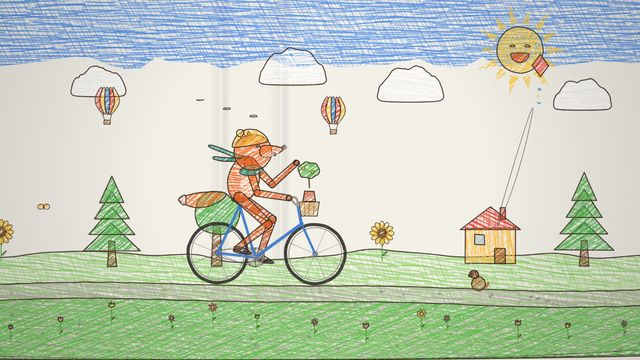
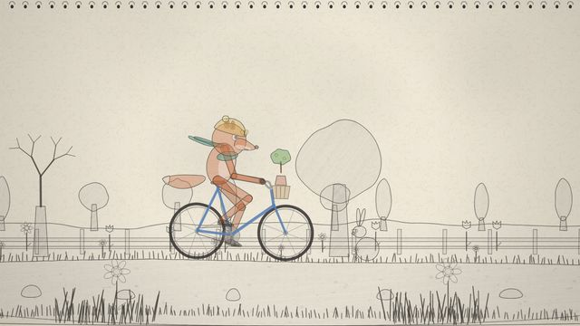
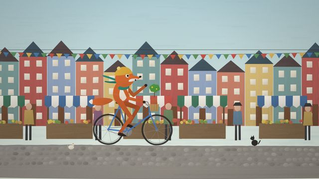
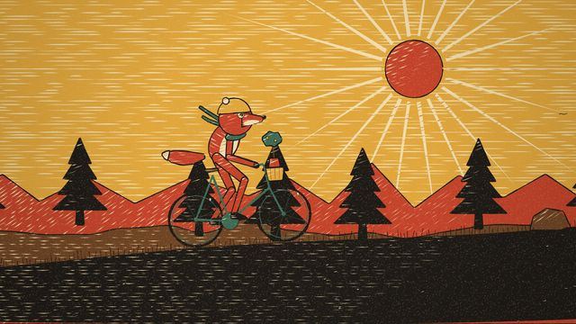
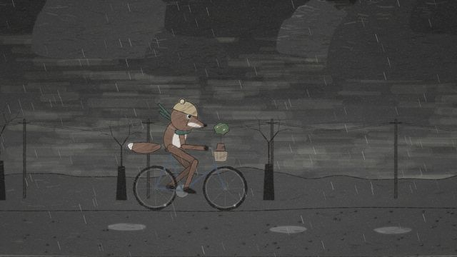
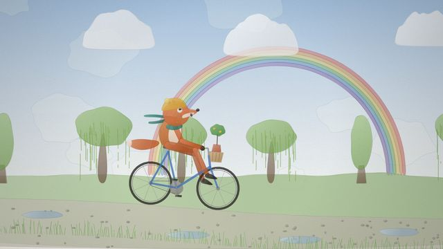
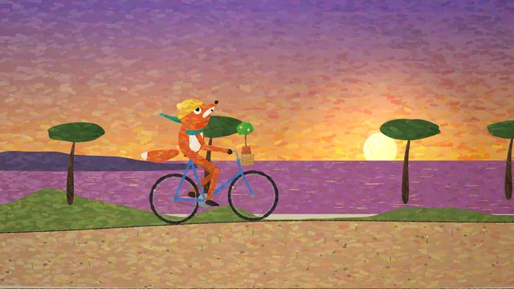
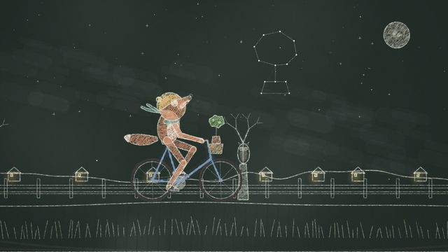
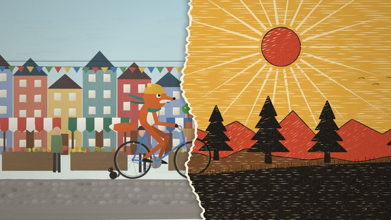
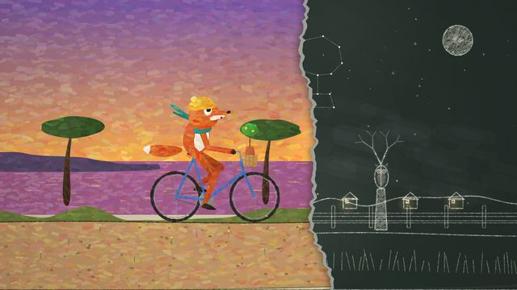
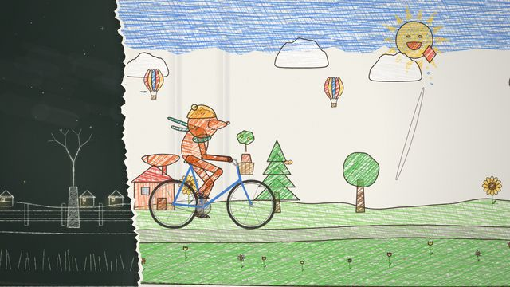
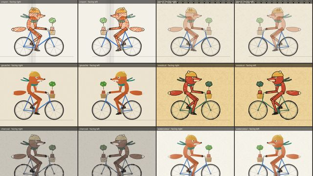
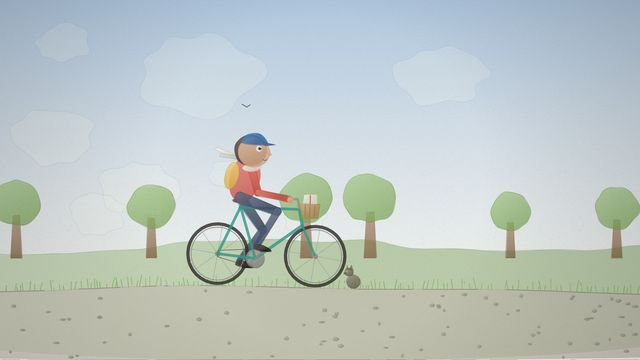
실제 작품
이 레포에서 만든 스킬입니다. 출발점은 Chetaslua가 X에 올린 110초 영상입니다. 펠리컨 한 마리가 자전거를 타고 크레용, 연필, 과슈, 목판화, 목탄, 수채, 민화풍 문양, 유화, 밤 항구, 칠판의 장을 차례로 지나며, 장과 장 사이는 찢어진 종이로 넘어가고, 그림과 음악과 모든 소리가 순수 JS 코드입니다. 이 스킬은 그 형식(한 번도 끊지 않는 옆모습 여행, 감정 하나 = 그림 재료 하나, 찢어진 종이 전환, 재료가 다시 그리는 같은 주인공, 루프)만 가져오고, 엔진과 예제 「The Long Way Home」의 주인공 · 장면 · 음악은 모두 이 레포의 것입니다.
링크
- SKILL.md 워크플로
- 폴더 lib · scripts · references · templates · examples
- README.md 빠른 시작
- references/BRIEF.md 주제 → 브리프, 캐스트 · 스틸 검토 기준
- references/LOOK.md 원본에서 읽어 낸 형식
- references/MEDIA.md 그림 재료 8종, 어울리는 감정, 새 재료 추가
- references/KIT.md API
- references/LESSONS.md 겪은 문제와 해결